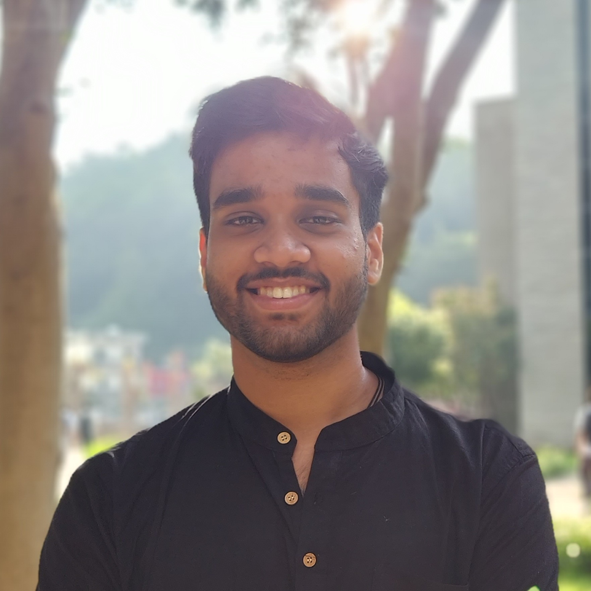

Ambrish Chaurasiya

Summary
I am a hardworking individual who masters stuff overtime.
Education
- 91.8% - Class 10th (ICSE Board) | 70.4% - Class 12th (CBSE Board)
- University:-UPES , Btech CSE
- First year :- 8.4 CGPA (1st semester:-7.68 SGPA | 2nd Semester:-9.09 SGPA)
Work Experience
Social Internship – Sustainable Human Development NGO, Gorakhpur, June & July 2024
Change Maker
- Led a team to develop and manage a reporting system, tracking daily attendance and progress of individuals with disabilities for improved data reliability.
- Streamlined data management by creating structured reports, enhancing clarity and enabling real-time monitoring of key development metrics.
- Conducted interviews to assess NGO impact, government support, and raised awareness of government schemes for people with disabilities.
- Strengthened communication by connecting with diverse individuals, gaining inspiration and insights.
Technical Skills Applied: Data organization, report structuring, real-time tracking, teamwork, and problem-solving, with a focus on inclusivity in social work.
Skills
- Data Structres:
- Web Dev:
- DBMS:
Certifications And Achievements
- UPES CSI HACKATHON 8.0 Top 20
- Udemy Full Stack by Dr. Angela Certificate
Others
Contact Me
Video Editing Hobby
© Ambrish Chaurasiya. All rights reserved